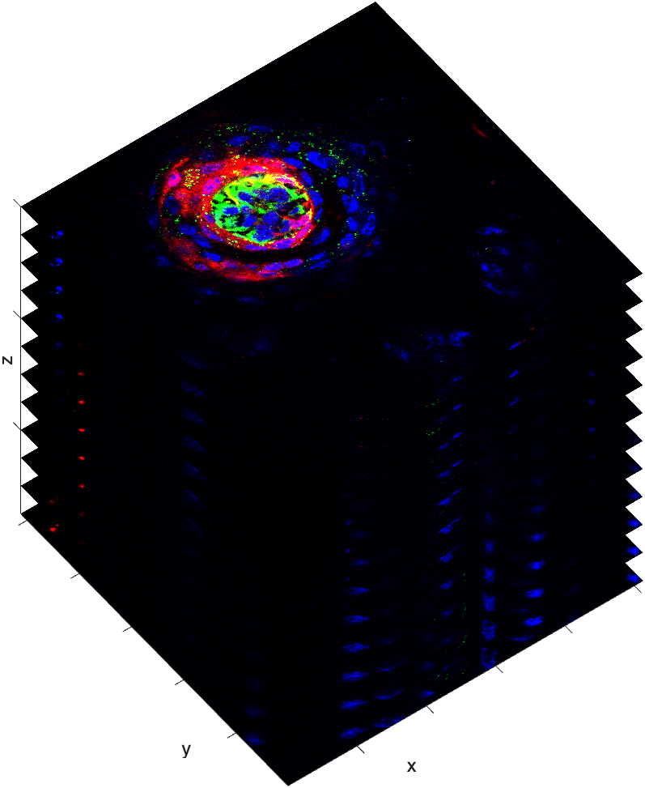

Loading Microscopy Volumes
Image volumes created by advanced micrography, such as confocal imaging, are best loaded into MATLAB using the Bio-formats MATLAB toolbox, bfmatlab. This toolbox can handle the proprietary file formats generated by all of the major microscope manufacturers. Saving image stacks in the proprietary file format of the microscope best ensures that the full resolution and bit-depth of the image data is preserved, along with all captured metadata.
In this example, we will load a 4D image stack of a taste bud.

This image stack has 4 Dimensions. Its size is 512x512x3x12, which means that each individual slice in the stack is 512x512 and has three channels (like an RGB image). And there are 12 of these slices.
mmReadImgND
The course function mmReadImgND is a wrapper for the tools included in the bfmatlab toolbox. The following syntax loads a color image stack created by a confocal microscope.
| Load confocal image dataset | |
|---|---|
Reviewing the workspace shows the size and class of RGB4…
…RGB4 is an 8-bit 4D array. It has 3 channels and 12 image slices. Each image slice in the volume has 512 rows (Height) and 512 columns (Width).
Reviewing the meta structure reveals the same information, along with size of the voxels (PixelSpacing)…
meta = struct with fields:
filename: "2641-tastebud-RGB.tif"
StudyDescription: '2641-tastebud-RGB.tif'
SeriesSelected: 0
Width: 512
Height: 512
BitDepth: 'uint8'
PixelSpacing: [0.30333 0.30333 0.75531]
ChannelCount: 3
PlaneCount: 12
TimeCount: 1
XML: "<?xml version="1.0" encoding="utf-8"?>↵<OME xmlns:xsi="http://www.w3.org/2001/XMLSchema-instance" xsi:schemaLocation="http://www.openmicroscopy.org/Schemas/OME/2016-06 http://www.openmicroscopy.org/Schemas/OME/2016-06/ome.xsd">↵<Image ID="Image:0" Name="2641-tastebud-RGB.tif">↵<Description/>↵<Pixels BigEndian="true" DimensionOrder="XYCZT" ID="Pixels:0" Interleaved="false" PhysicalSizeX="0.303326643969745" PhysicalSizeXUnit="µm" PhysicalSizeY="0.303326643969745" PhysicalSizeYUnit="µm" PhysicalSizeZ="0.755310778914241" PhysicalSizeZUnit="µm" SignificantBits="8" SizeC="3" SizeT="1" SizeX="512" SizeY="512" SizeZ="12" Type="uint8">↵<Channel ID="Channel:0:0" SamplesPerPixel="1">↵<LightPath/>↵</Channel>↵<Channel ID="Channel:0:1" SamplesPerPixel="1">↵<LightPath/>↵</Channel>↵<Channel ID="Channel:0:2" SamplesPerPixel="1">↵<LightPath/>↵</Channel>↵<MetadataOnly/>↵</Pixels>↵</Image>↵</OME>"
in this image matrix.
Indexing Image Stacks
Volume processing often requires indexing the stack to pull out smaller stacks or individual slices.
Indexing image stacks is fairly straightforward — you just need to keep track of the Dimensions. For example, we can index out the Red channel using the following syntax:
| Index out the Red Channel | |
|---|---|
…This returns a 4D array with just 1 channel
We can drop the singleton dimension (dimension three) using the function squeeze.
…Now RED is a 3D array.
We can index a single slice out of RED using the following syntax:
| Indexing out the Sixth Slice from RED | |
|---|---|
…slice is a 512x512 image.
If we wanted all three channels in a slice, we simply index the original, 4D volume, RGB4.
| Index out 6th Slice from RGB4 | |
|---|---|
…rgb_slice is an image with 3 channels (RGB image).
So, we can index out a color channel by accessing the third dimension and index out a z-plane by accessing the 4th dimension.